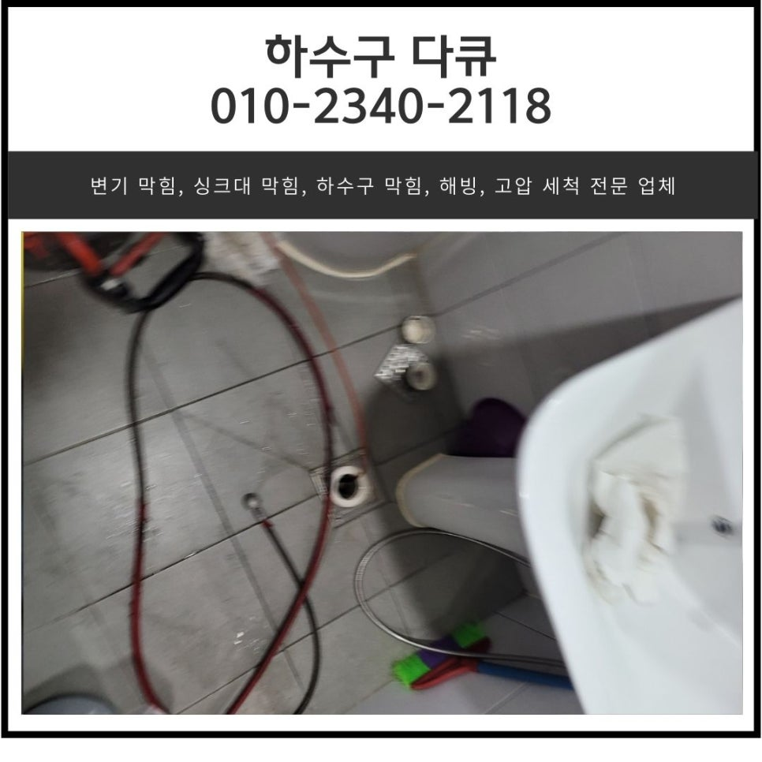
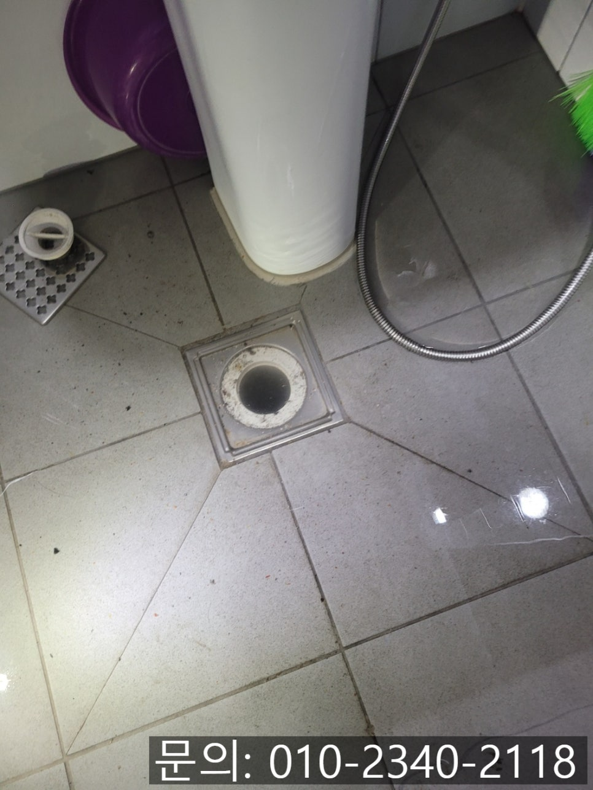
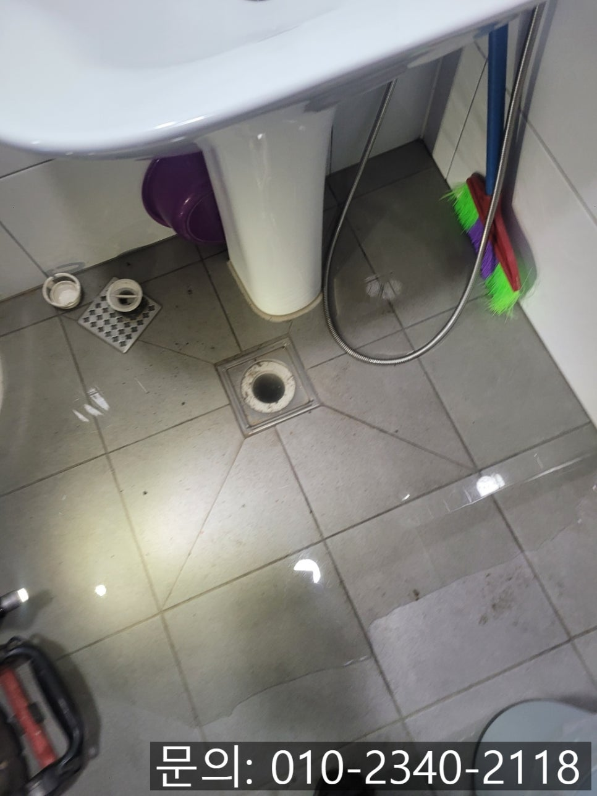
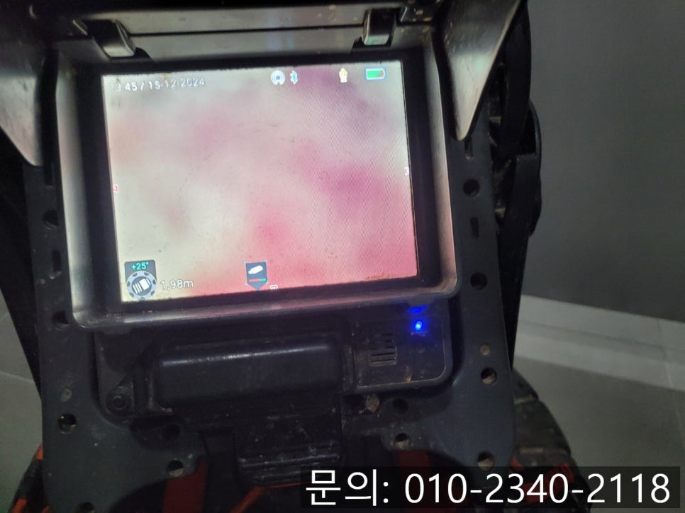
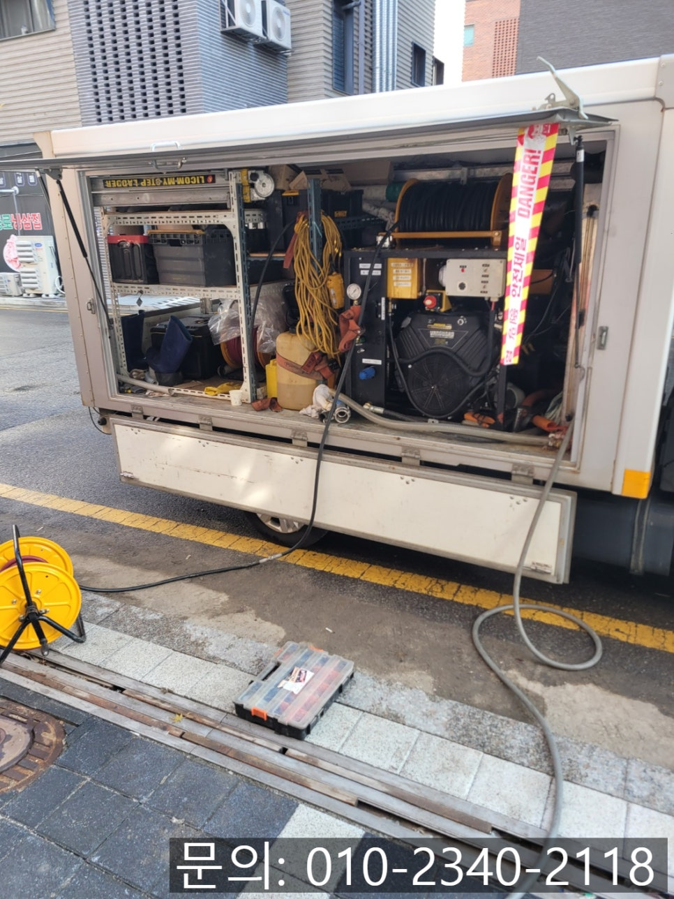
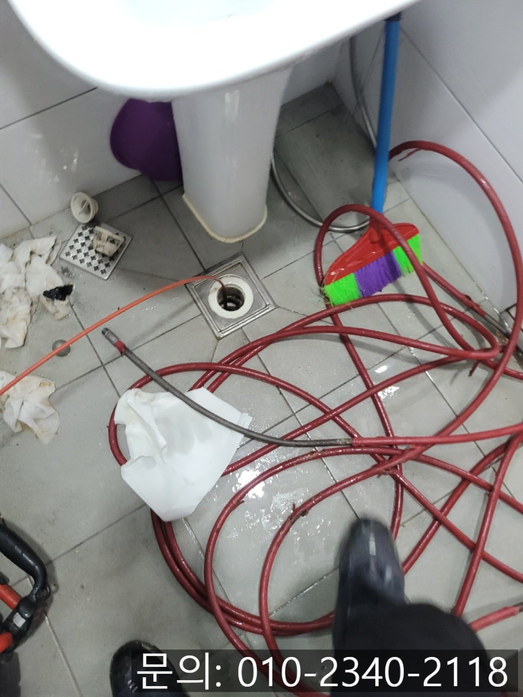
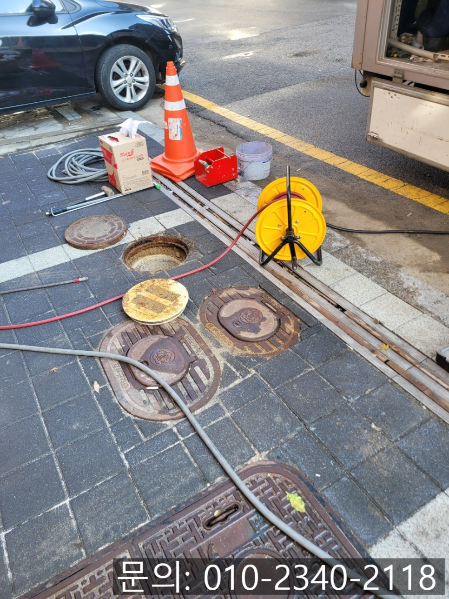

🏠 송산면 화장실 바닥 역류 화성 우정읍 하수구 막힘 뚫는 전문 업체
화성 우정읍 하수구막힘 전문 시공 후기

📋 작업 개요
- 위치: 화성 우정읍, 우정읍, 화성
- 서비스 유형: 하수구막힘, 배관막힘, 역류해결, 뚫는업체, 배관청소, 고압세척
- 작업 일시: 2024. 12. 20. 20:18
- 업체명: 하수구수사대 (010-5615-2118)
🔍 문제 상황
안녕하세요.
송산면 화장실 바닥 역류, 화성 우정읍 하수구 막힘 뚫는 전문 업체 하수구 다큐입니다.
송산면 화장실 바닥 역류가 발생하게 되면 화장실을 사용할 수 없다는 불편함이 발생합니다.
가정집 화장실이었다면 다른 화장실을 사용하면서 설비업체를 섭외해 시공을 하면 되겠지만, 상가건물의 화장실 바닥에서 역류가 발생하게 되면 가게를 이용하는 고객님들의 불편으로 이어져 신속하게 화성 우정읍 하수구 막힘 뚫는 전문 업체를 섭외해 해결해야 합니다.
네이버에 검색해 보면 정말 많은 설비업체들이 있는데요.
그중에서 어떤 업체가 작업 비용을 과도하게 청구하지 않으면서 깔끔하게 해결해 주는지 확인하기는 쉽지 않죠.
화성 우정읍 하수구 막힘 뚫는 전문 업체를 선정하실 때는 여러 업체를 꼼꼼하게 따져보고 결정하셔야 합니다.
오늘은 상가 주택 건물 하수구 막힘으로 다녀온 현장을 소개해 드리면서, 설비 전문 업체를 선정할 때 주의하실 점을 알려드릴게요.

🔎 원인 분석
💡 전문가 진단: 정밀 진단 장비를 사용하여 슬러지의 고착 여부를 판명하고 타격/세척 작업을 실시했습니다.
상가주택 건물 1층에 위치한 식당 주방에서 물을 사용하거나, 위층에서 물을 사용하면 1층 화장실 바닥에서 물이 역류한다고 연락을 받았습니다.
신속하게 현장에 도착해 보니 유선상 말씀해 주신 대로 바닥에서 역류한 물이 흘러가지 못한 채 고여있는 상태였어요.
식당 고객님들도 많이 불편하신 상황이라 신속한 해결이 필요해 보였습니다.
석션을 사용해 고여있는 물과 이물질을 1차로 제거해 준 다음 내시경 카메라를 진입시켜 배관 내부를 살펴보니 기름 슬러지로 가득 차 있는 상태였습니다.
내시경 카메라를 이용해 배관의 길이와 이물질의 양 등을 파악해 고객님께 안내해 드렸어요.
상가건물이다 보니 배관의 길이가 길고 기름 슬러지도 많아 작업 방법에 대해 설명해 드리고 고압세척을 진행하기로 했습니다.
고압세척의 경우 현존하는 배관 청소 장비 중 가장 성능이 좋은 장비라고 생각하시면 됩니다.
차량 오른쪽에 설치되어 있는 물탱크에 많은 양의 물을 받은 다음 짧은 시간 동안 높은 압력의 물의 쏟아내 배관에 쌓인 이물질을 제거하게 됩니다.

🔧 작업 과정
워낙 고가의 장비이다 보니 일부 설비업체들의 경우 고압세척 장비를 구비하지 않는 경우가 많은데요.
하수구 막힘 현장마다 배관을 막고 있는 원인이나 배관의 크기도 다르다 보니 전문적인 장비를 구비한 업체를 선정하시는 게 좋습니다.
우선 화장실 바닥에서 내시경으로 살펴보면서 고압세척을 진행했어요.
많은 양의 기름 슬러지를 제거할 수 있었지만, 워낙 배관이 길다 보니 반대쪽에서도 고압세척을 진행해 남아있는 기름 슬러지를 제거하기로 했습니다.
상가건물 1층 주차장 쪽에서 화장실 바닥과 연결되어 있는 배관을 찾을 수 있었어요.
내시경 카메라를 진입시켜 점검해 보니 여전히 딱딱한 기름 슬러지가 배관을 막고 있는 상태로 고압세척이 필요했습니다.
차량에 구비하고 다니는 파이프를 이용해 배관으로 장비가 진입할 수 있도록 길을 만들어주고 내시경 카메라로 이물질을 위치를 먼저 파악한 뒤 고압세척을 진행했습니다.
높은 압력의 물을 짧은 시간 뒤쪽으로 쏟아내며 앞으로 전진하는 방법으로 작업을 하게 되는데요.
끈적거리는 기름 슬러지뿐 아니라 딱딱하게 굳어있는 기름 슬러지 덩어리도 강력한 힘으로 제거하게 됩니다.
고객님께서 직접 보시고도 믿기지 않으실 정도로 큰 기름 슬러지 덩어리가 쏟아져 나옵니다.
이렇게 많은 이물질이 배관을 막고 있는 상태이다 보니 건물에서 물을 사용하면 1층 상가 화장실 바닥으로 역류했던 것 같아요.
배관을 막고 있는 이물질을 모두 제거한 다음, 내시경 카메라를 이용해 꼼꼼하게 배관 내부를 점검해 드렸습니다.


✅ 작업 완료
남아있는 기름 슬러지나 이물질은 전혀 보이지 않았고요.
배관이 손상되거나 하는 특이사항도 발견하지 못했습니다.
마지막으로 건물에서 물을 사용해도 역류나 막힘없이 잘 흘러가는 것을 확인하고 장비를 챙겨 철수할 수 있었어요.
경기도 화성시 효행로 1060 10층 1004-A246호




⚠️ 하수구 배관 막힘 예방 및 관리 가이드
- ✅ 머리카락, 비닐, 물티슈 등 물에 분해되지 않는 이물질은 하수구 유입을 절대 금지해 주세요.
- ✅ 하수구 거름망을 씌우고 모여진 이물질은 주기적으로 쓰레기통에 바로 비워주셔야 합니다.
- ✅ 배관 노후가 심할 경우 이물질이 더 쉽게 걸리므로 주기적인 배관 세척(고압세척 등)을 권장합니다.
- ✅ 작업 후 1년 이내 재발 시 하수구수사대에서 무상 A/S 보증 서비스를 제공합니다.
💡 핵심 정리
- 확실한 장비 작업(내시경 점검 및 샤프트 스케일링)으로 원인을 뿌리 뽑습니다.
- 작업 후 1년 이내에 동일한 부위 재발 시 100% 무상 A/S 서비스를 보장합니다.
- 서울 · 경기 · 인천 전 지역에 24시간 언제든 긴급 출동할 수 있도록 항시 대기 중입니다.
❓ 자주 묻는 질문 (FAQ)
🚨 화성 우정읍 하수구막힘 문제로 고민이신가요?
정확한 원인 진단과 확실한 시공으로 재발 없는 해결을 약속드립니다.
24시간 긴급 출동 | 서울 · 경기 · 인천 전지역 | 1년 내 재발 시 무상 A/S